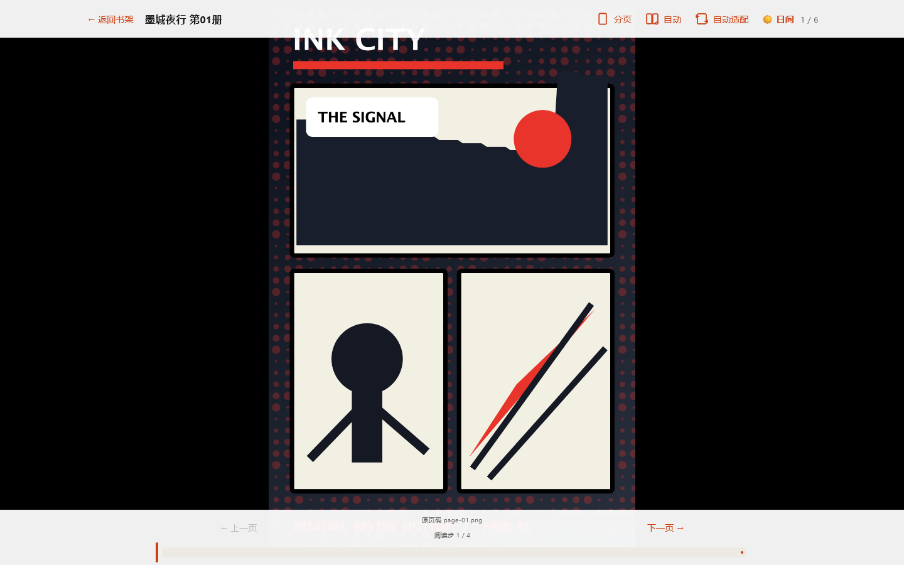
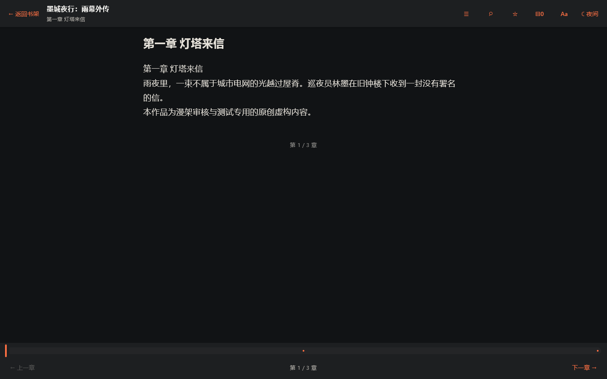
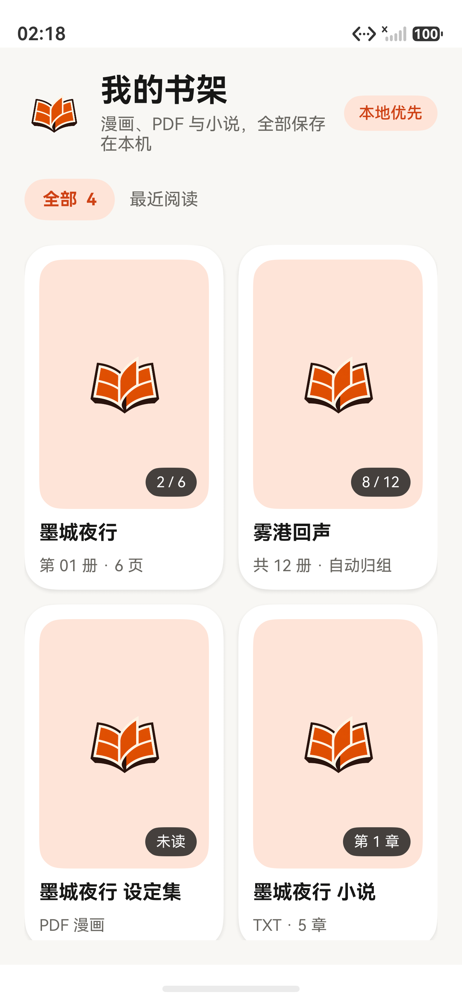

书在本地，随时翻开。
漫画、小说、PDF，导入后即可离线阅读。
漫画 · 小说 · PDF 阅读器
导入自己的收藏，在每一页里，留一点自己的时间。
Microsoft Store / Google Play




Windows 真实界面 · 原创示例内容，实际界面以当前版本为准。
漫画、小说、PDF，导入后即可离线阅读。
无需漫架账号，打开自己的收藏，专注于阅读本身。
从第一格漫画，到最后一行文字。
把整理交给书架，把时间留给故事。
同一作品归组，分册自然排序。用搜索、筛选和阅读状态，找回想看的那一本。
单页、双页或连续纵向，随内容切换。调整方向、缩放与裁边，找到自己的阅读方式。
支持 TXT 与无 DRM EPUB。配合目录、搜索、书签和排版设置，沉浸在文字的世界里。
手机、平板、电脑与电视，延伸故事的边界。
各平台下载状态见下方说明。


触控翻页、纵向阅读，照顾每一种握持方式。
HarmonyOS / iPad 界面展示 · 尚未发布

桌面用键鼠，电视用遥控器，让故事舒展开来。
Apple TV 界面展示 · 尚未发布
Windows 与 Android 版现已上线。你的书架，等你翻开。
在电脑上，展开你的书架。
前往 Microsoft Store（新窗口）覆盖手机、平板与折叠屏。
前往 Google Play（新窗口）以下平台尚未发布，上线后更新正式入口。
为 Mac 上的阅读时光准备。
尚未发布让好故事，随 iPhone 同行。
尚未发布更开阔的触控阅读空间。
尚未发布手机、平板、2in1 与智慧屏。
尚未发布用遥控器，翻开新的一页。
尚未发布把自己的书架，搬到大屏。
尚未发布计划上架，拓展客厅阅读体验。
尚未发布售价、系统要求与可用地区以商店页面为准。多平台适配不代表云端自动同步。
漫架是一款本地阅读器，不提供在线书源或内置作品。请导入自己拥有或已获授权的漫画、PDF、TXT 与无 DRM EPUB 文件。页面中的作品为原创演示内容。
核心本地阅读无需漫架账号，导入后的内容可以离线阅读。通过商店获取应用需要网络；主动使用局域网传送等功能时，需要相应的网络环境。
漫架采用本地优先设计，书库与阅读进度保存在各设备上，不会自动上传到漫架云端。多平台不代表云端自动同步，迁移与备份能力请以所用平台的实际发布版本为准。
Windows 与 Android 版已发布，可分别通过 Microsoft Store 和 Google Play 获取。iOS、iPadOS、macOS、HarmonyOS、Android TV、Apple TV 与计划上架的 Xbox 尚未发布，正式上线后会在本页更新，不承诺具体发布日期。